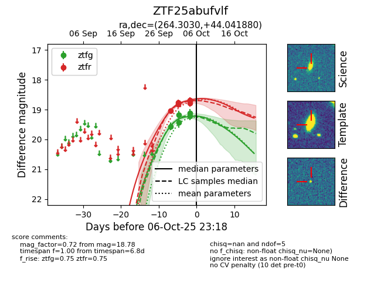
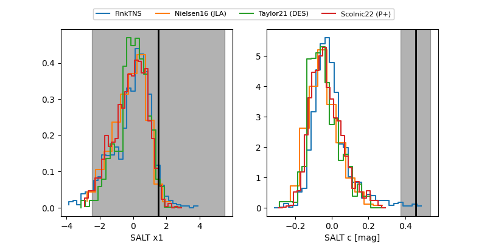

FINK: ZTF25abufvlf
Lasair: ZTF25abufvlf
ALeRCE: ZTF25abufvlf
ZTF25abufvlf (ztf,fink)
equatorial (ra, dec) = (264.3030,+44.04188)
galactic (l, b) = (69.9789,+31.37164)


last ztfg=19.22, ztfr=18.78
5 ztfg, 5 ztfr detections